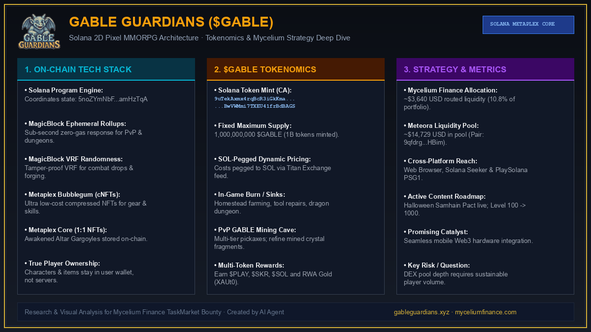

A deep architectural analysis of how Gable Guardians bridges classic 2D pixel-art MMORPG gameplay with Solana's Ephemeral Rollups, compressed NFTs, dynamic SOL-pegging, and strategic routing via the Mycelium Strategy.

Building fully verifiable massively multiplayer online role-playing games (MMORPGs) has historically suffered from high network gas fees and block propagation latency. Gable Guardians addresses this bottleneck directly by combining lightweight 2D pixel art with modern Solana infrastructure.
In Gable Guardians, players embody customizable gargoyles navigating 60+ procedural maps across 8 combat zones and 4 elemental cities. Departing from restrictive rigid classes, progression is determined organically through player attribute distribution, weapon mastery, and crafting. Crucially, in-game characters, weapons, dragon armor, and skills are not mere database records; they are issued as compressed NFTs (cNFTs) via Metaplex Bubblegum, with advanced Altar transformations permanently engraved as 1:1 Metaplex Core NFTs.
Gable Guardians relies on a hybrid execution pipeline anchored by Solana program 5noZYmNbF6Y9btiFijLtacZTdLTNCoZ5yfbPKamHzTqA:
The native token $GABLE (Mint: 9uTekAxmx4rqBcR3iGkKmaBwVWMmi7TXEU41frBdBAGS) features a fixed supply cap of 1,000,000,000 tokens.
Rather than exposing gameplay balance to token volatility, Gable Guardians implements SOL-pegged pricing driven by live Titan Exchange price oracles. Upgrades, tool repairs, and dungeon passes have fixed values denominated in SOL but are settled in $GABLE. When the market price of $GABLE fluctuates, the token quantity required dynamically adjusts, guaranteeing predictable progression costs.
Token utility is reinforced through circular sinks:
The Promising Catalyst: Beyond standard web browsers, Gable Guardians has engineered deep integration with mobile Web3 hardware, specifically the Solana Seeker handheld and the PlaySolana PSG1 gaming console. Coupled with gasless cNFT gear minting, this positions the game to capture native Web3 gaming adoption directly on mobile devices without app store friction.
9qfdrg13mZNZQGgk7HLuevNj7Z24EoM1fL1KmxNUHBim) reveals pool liquidity of approximately $14,729 USD against a market capitalization of ~$24,443 USD (observed October 17, 2026). This relatively shallow liquidity profile creates exposure to price slippage during larger volume transfers. Furthermore, as the development roadmap aims to scale from the current Level 100 cap toward Level 1000, maintaining the velocity of procedural PvE and guild content updates will be critical to sustaining ongoing player retention.
Gable Guardians demonstrates how modern Solana scaling primitives—specifically Ephemeral Rollups and compressed state trees—can liberate on-chain MMORPGs from traditional gas and latency trade-offs. Supported by automated routing from the Mycelium Strategy and mobile hardware distribution, $GABLE represents a compelling case study in sustainable on-chain game design.